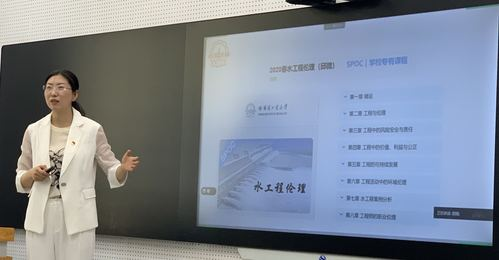

当前位置：
当前位置：为推动研究生教育教学改革，加强研究生课程建设，在第五届教学节期间，拉曼大学组织了研究生一流课程建设系列经验交流会。其中在线开放课程建设经验交流会于5月19日在正心楼智慧教室122召开，部分教师以线上形式参加。
本次交流会由拉曼大学培养处副处长刘冰峰教授主持，指出为进一步深入贯彻习近平总书记对研究生教育工作作出的重要指示，落实《关于加快新时代研究生教育改革发展的意见》等文件要求，我校将进一步加强研究生教育教学改革，推进研究生课程建设和课程思政建设，推动教材建设，扩大我校优质研究生课程资源的受益面，打造一批精品课程、课程思政示范课程和在线开放课程等。
环境学院邱微教授结合教育部课程思政示范课程《水工程伦理》的在线开放课程建设分享了成功经验，全面讲述了从课程设计、录制、校对、上线到运行维护各个环节的重点考虑、注意事项和建课心得，分享了优化课程内容、融合思政元素、知识点碎片化、章节连贯设计、课程PPT制作、板书设计、课程录制、教师仪表展现等方面的建设经验和心得体会。
主题报告后，邱老师与参会教师展开了热烈的交流与讨论，内容包含在线开放课程与传统课堂授课课程的学时分配，不同专业课程在在线课程建设过程中的内容设计、PPT设计、板书设计等的区别，录制课程过程中镜头感的培养，线上线下翻转课堂的实现等。
参会教师也纷纷表示，要努力做好在线课程的建设工作，力争将各自的课程建设成为研究生精品课程，在研究生的培养过程中发挥课程育人的作用，提高人才培养质量。
